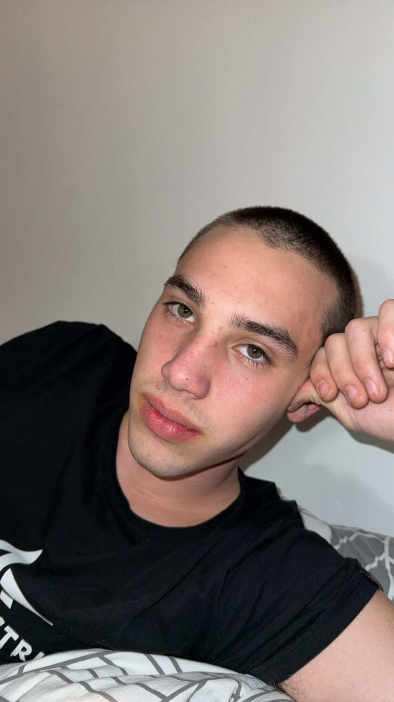

Moja osebna spletna stran

Sem Dorjan in to je moja zgodba, moj stil in moj pogled na življenje.
Rad imam preproste stvari, dobre ljudi in trenutke, ki ostanejo za vedno.
1. Rodil sem se in začel svojo pot.
2. Moje otroštvo je bilo polno zanimivih trenutkov.
3. Vedno sem rad raziskoval svet okoli sebe.
4. V šoli sem se učil novih stvari.
5. Spoznal sem dobre prijatelje.
6. Razvil sem svoje interese.
7. Vedno sem si želel več.
8. Naučil sem se premagovati izzive.
9. Začel sem graditi svojo prihodnost.
10. Nikoli nisem obupal.
11. Vsak dan sem postal boljši.
12. Naučil sem se pomembnih lekcij.
13. Razumel sem vrednost truda.
14. Cenim male stvari.
15. Življenje me je oblikovalo.
16. Naučil sem se zaupati sebi.
17. Postavil sem si cilje.
18. Šel sem skozi težke čase.
19. A sem vedno nadaljeval.
20. Vsaka izkušnja me je okrepila.
21. Naučil sem se spoštovanja.
22. Razvil sem svoj stil.
23. Postal sem to, kar sem danes.
24. Še vedno rastem.
25. Gledam naprej.
26. Sanjam velike sanje.
27. Delam na sebi.
28. Nikoli se ne ustavim.
29. Verjamem vase.
30. To je šele začetek moje poti.
Email: dorjan@email.com
Instagram: @dorjan